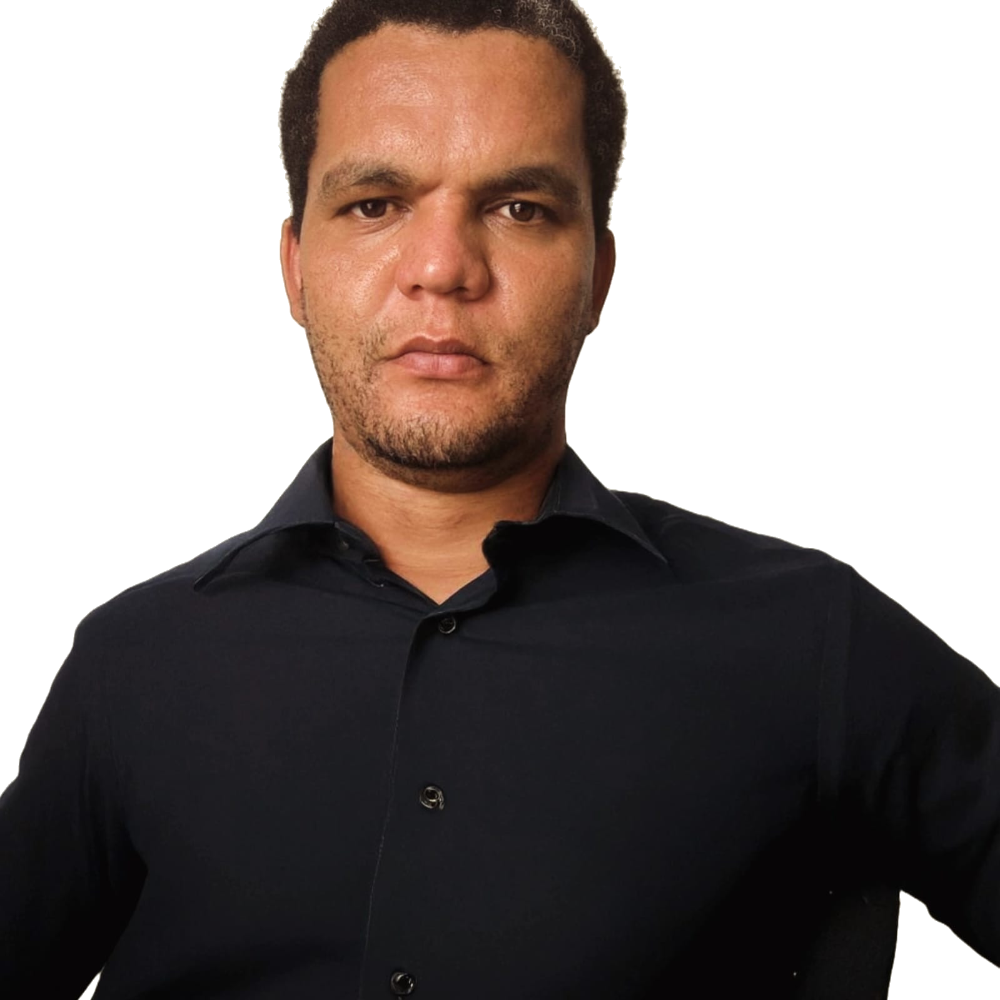

Eleve seu negócio digital a outro nível com um Front-end de qualidade!

Olá! Sou Taidson, desenvolvedor com especialidade em Backend com Java e Spring, e Front-end com HTML, SASS, TypeScript. Ajudo empresas e pessoas a colocarem em prática boas ideias. Vamos conversar?